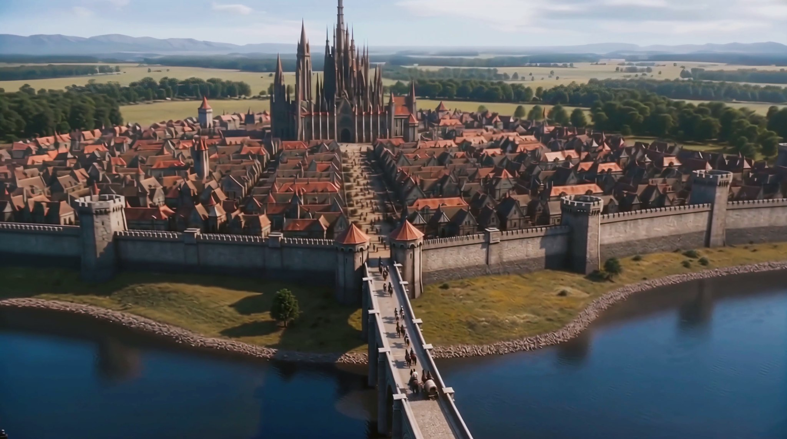
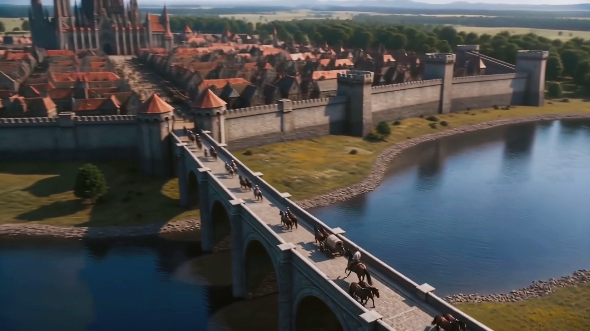
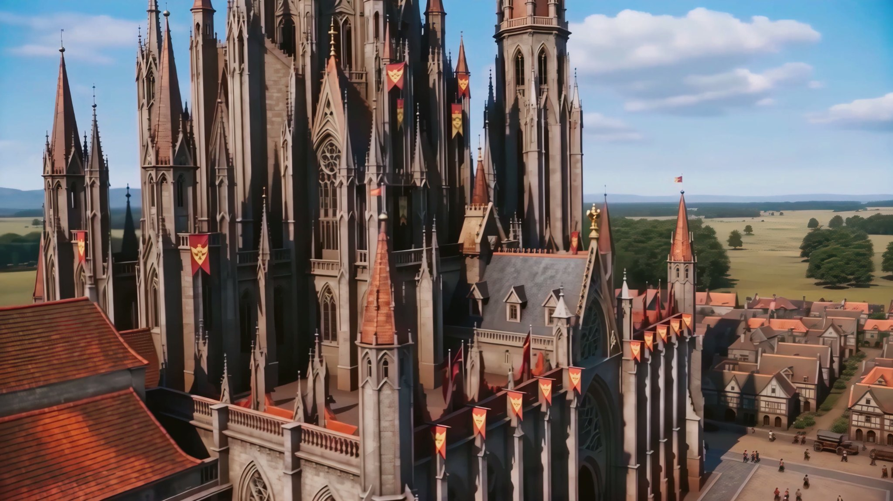
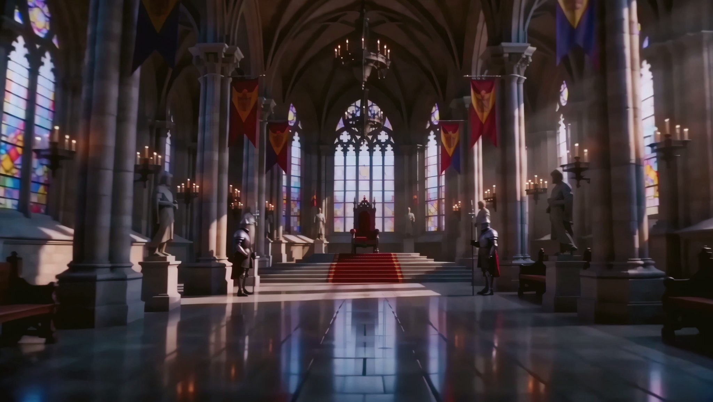
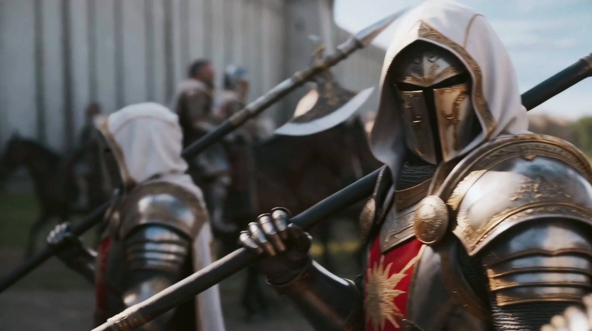

Королевский дворец
Центр королевской власти и один из важнейших объектов Столицы.

Локация / Фраустер
Главный город королевства Фраустер и центр королевской власти.
Сердце ФраустераАрхивная запись · Том I
I / Город и королевство
Столица — главный город королевства Фраустер и центр его политической жизни. Здесь находится королевский дворец, действует совет и принимаются решения, влияющие на всё государство.
Но Столица — не только место, откуда управляют королевством. За её стенами живут обычные люди, продолжается повседневная жизнь, а через город проходят жители, торговцы и воины.
Столица объединяет две стороны Фраустера: государственную власть и жизнь людей, которыми эта власть управляет.
II / Город
Столица окружена каменными стенами с башнями и городскими воротами. За укреплениями располагается городская застройка, а через ворота проходят жители, воины и прибывающие отряды.
Несмотря на укрепления, перед нами прежде всего большой населённый город — центр государства, который одновременно должен быть способен защитить себя.

III / Резиденция власти
Одним из ключевых объектов Столицы является королевский дворец. Здесь сосредоточена власть Фраустера.
Во время правления Филка дворец становится местом обсуждения важных государственных вопросов и решений, связанных в том числе с войной. Это политический центр Столицы и одно из важнейших мест королевства.

IV / Решения
В Столице король и его совет принимают решения, определяющие дальнейшие действия Фраустера.
В периоды военной угрозы отсюда отправляются приказы, созываются силы королевства и координируются действия государства. Поэтому значение Столицы выходит далеко за пределы её стен.

V / Повседневная жизнь
Несмотря на политическое и военное значение, Столица остаётся прежде всего городом. Здесь живёт гражданское население и продолжается обычная общественная жизнь.
В известный период в городе работает ярмарка, а на улицах выступают музыканты.
Даже когда положение королевства становится напряжённее, за стенами Столицы остаются люди, для которых происходящее вокруг — их повседневная жизнь.
Цернхорн защищает Фраустер.
Столица — то, ради чего Фраустер сражается.
VI / Мобилизация
Во время всеобщей мобилизации привычная жизнь Столицы меняется. В город прибывают многочисленные воины, а жителей направляют в казармы для получения оружия и обмундирования.
Столица становится одним из мест, где силы Фраустера собираются и готовятся к дальнейшим действиям. Город, который обычно является центром власти и общественной жизни, начинает работать на нужды войны.

VII / Городские укрепления
Статус политического центра не оставляет Столицу без собственной защиты. Город окружён стенами, укреплён башнями и имеет ворота.
На стенах и башнях размещаются флаги королевства. Городские укрепления позволяют защищать сердце Фраустера в случае прямой угрозы.
VIII / Подтверждённые объекты
Центр королевской власти и один из важнейших объектов Столицы.
Укрепления, окружающие город.
Часть оборонительной системы Столицы.
Проходы через городские укрепления.
Используются в том числе во время мобилизации для выдачи оружия и обмундирования.